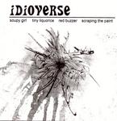

Home Artist links Label link

Idioverse - Tiny Liquorice
| Artist: | Idioverse |
| Title: | Tiny Liquorice |
| Label: | |
| Length(s): | 17 minutes |
| Year(s) of release: | 2004 |
| Month of review: | [10/2005] |
Line up
Ben van der Poorten - lyrics, vocals, guitar, recording
Jeeshan Patwaari - guitar
Athos Demosthenous - bass
M Blake sr. - drums
Tracks
| 1) | Soupy Girl | 1.14
|
| 2) | Tiny Liquorice | 4.13
|
| 3) | Red Buzzer | 6.29
|
| 4) | Scraping The Paint | 5.03
|
Summary
This band is based in the UK, although the names in the band point to
the Netherlands, Greece and South-East Asia as well.
The music
Soupy Girl is a combination of two spoken voices (a small girl and an
older man) with some samples and the like in the back. With the title track
we move Radiohead area. The wavery voice of Van Der Poorten fits in very well
with the ethereal style music, he has some of the drama of Bjork too.
The bass of Demoshtenous plays a very important role here. Halfway,
the vocoded rock breaks loose and the drummer hits his cymbals with
a vengeance. This part recurs at the end as well.
Red Buzzer is a bit longer, with again a major role for the bass guitar.
I always like bands who put their bass very much up front.
Halfway, this seems a bit like Toploader's manic little brother
(the singing mainly), but instrumentally, it can be very laid back too,
a bit psychedelic.
The final song on this EP is a bit more freeform, a bit more in the vein
of the later Radiohead and yes, why not, Portishead. The song has a
nice, relaxed, dreamy atmosphere. The vocals remind me of Toploader
and Starsailor.
Conclusion
Mesmerizing rock from the UK. The band is mainly in the postrockish vein
of Radiohead, GYBE with elements from various places: Bjork, Pineapple Thief
and some of the American noise bands. The performance is good and the songs
are varied and full of atmosphere. Time for a good label to take some chances,
and let these guys record an album.
© Jurriaan Hage